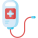
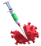
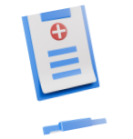
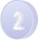
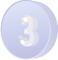
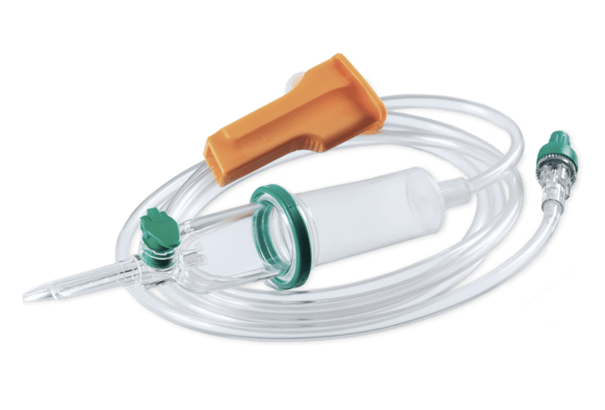
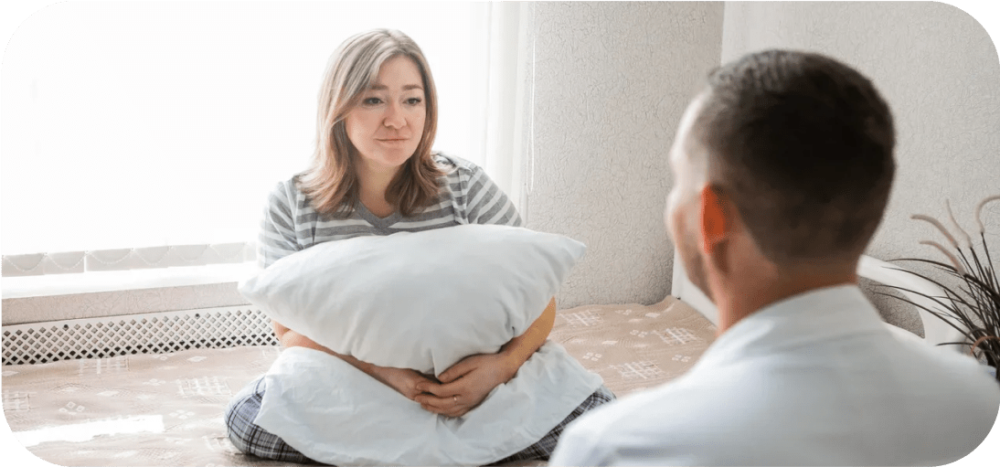
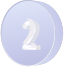
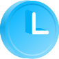

Очищение организма от наркотиков путем детоксикации 
Начните движение к здоровой и счастливой жизни без наркотиков!
Цена от 3 200
Мы работаем круглосуточно, 7 дней в неделю

У нас работают только привитые от COVID-19 врачи

Цена от 3 200
Бесплатно приедем и уговорим на лечение
100%
Проверенные методы
12 лет
Минимальный стаж работы врачей
100%
Гарантия на полный курс лечения
Как проходит детоксикация
Звонок в клинику
Звонки принимаются круглосуточно

Через 30 минут
Детоксикация у вас дома или в клинике

Через час
Пациент заснет здоровым сном
Что входит в стандартную детоксикацию?
Капельницы
Нейропротекторы
Седативные препараты
Кардиопротекторы
Самолечение - опасно
Обратитесь к нашим специалистам за консультацией!

Комплексное очищение организма от наркотиков и восстановление работы внутренних систем. Проводится под надзором специалистов
Мы понимаем, как это сложно

Мы понимаем, как это сложно
Видеть страдания близкого человека. Перепробовать всё и не найти выхода. Когда близкий человек быстро разрушает себя, не осознавая этого. Хватается за нож, перестает спать, есть и мыться. Думает, что за ним следят и подслушивают...
Мы знаем как Вам помочь У нас для этого есть все ресурсы!
Две стадии реабилитационного процесса
Реабилитация в наркологическом центре
01
Восстанавление когнитивно-поведенческих функций зависимого
02
Налаживает взаимоотношения с родственниками
03
Зависимый получает психологические инструменты для работы с тягой и жизни без наркотиков

Постлечебная программа
01
Приобретение навыков трезвой жизни в социуме
02
Посещение психологических групп вне реабилитационного центра
03
Психологическая поддержка 24/7
Стоимость pеабилитации в наркологическом центре
Госпитализация в реабилитационный центр
1 000 руб.
Курс реабилитации
от 1 200 руб./месяц

Только проверенные реабилитационные центры
Ежемесячно:

160 часов
Групповых занятий
75 часов
Личного самоанализа
45 часов
Работы с психологом
39 часов
Тренингов личностного роста
Пожизненная поддержка и гарантия на курс лечения
При прохождении курса лечения выдается гарантийный сертификат. Мы уверены в качестве лечения, срыв случается не более чем у 6% резидентов
Если зависимый пройдет полный курс реабилитации, будет выполнять все рекомендации и сорвется — Корректирующий курс реабилитации бесплатноDocument
Все консультации бесплатные, анонимные, и круглосуточные
Детоксикация от наркотиков направлена на очищение организма от продуктов распада запрещенных веществ. Метод помогает справиться с наркозависимостью на физическом уровне. Адекватно подобранная схема детоксикационной терапии нормализует все физиологические функции жизненно важных органов и систем, на фоне чего они могут полноценно работать дальше без поступления очередной дозы наркотического вещества.
Детоксикация от наркозависимости — это начальный этап сложного лечения, основанный на медикаментозных и немедикаментозных методиках. Вне зависимости от того, кто обратился за наркологической помощью — сам пациент или его близкие, в 70% случаев человек поступает в клинику либо в состоянии наркотической интоксикации разной степени тяжести с характерным симптоматическим комплексом, либо на фоне продолжительного и активного употребления запрещенных веществ.
Желая сохранить анонимность либо по другим мотивам, многие пациенты и их родственники вызывают нарколога на дом в надежде получить быструю помощь. Подобный подход оправдан при условии относительно недавнего применения наркотических средств (стаж зависимости менее 1 года), употребления растительных каннабиноидов — гашиша, конопли, марихуаны или спайса, симптомов абстиненции, выраженных в легкой или умеренной степени тяжести. То есть детоксикация на дому показана далеко не во всех случаях. Если у наркозависимого имеются следующие состояния,
Передозировка наркотиков
Острые психотические расстройства
Общее тяжелое состояние пациента
Стаж наркозависимости более года
Полинаркомания — смешивание нескольких ПАВ и алкоголя
Абстинентный синдром, ломка
Употребление опиатов, синтетических наркотиков и стимуляторов
Все эти клинические ситуации являются показаниями для госпитализации наркозависимого в стационар. Также детоксикационная терапия от наркотических веществ показана при наличии у человека самостоятельного желания пройти лечение и справиться с зависимостью, имеющемся страхе перед очередной «ломкой», выраженных соматических расстройствах на фоне употребления ПАВ.
Преимуществами проведения детоксикации в клиниках Москвы:
В наркологических клиниках Москвы пациенту будет оказана специализированная экстренная помощь, направленная на предупреждение серьезных осложнений для здоровья. За ним устанавливается круглосуточное наблюдение врачом-наркологом и психиатром, что позволяет отследить любые изменения в психическом и физическом состоянии подопечного и в случае необходимости принять соответствующие меры.
Индивидуальный подход, отсутствие стандартных и универсальных тактик воздействия
Забота о пациенте — медицинские вмешательства будут проводиться требуемое количество раз, метод «общепринятых двух капельниц» с последующей выпиской из стационара исключен